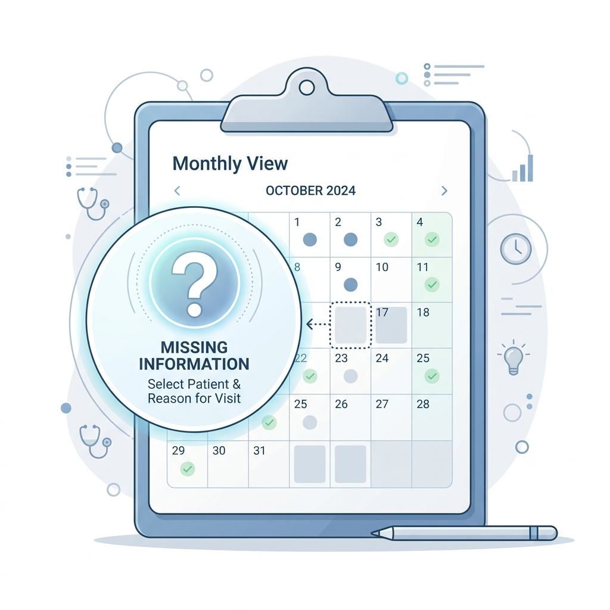
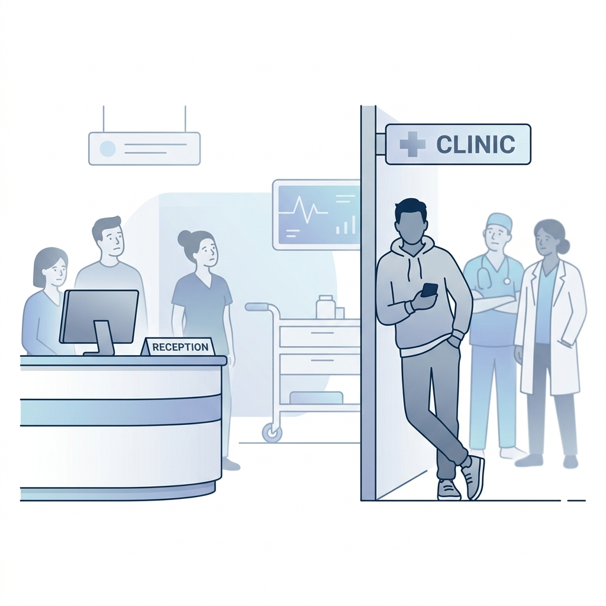
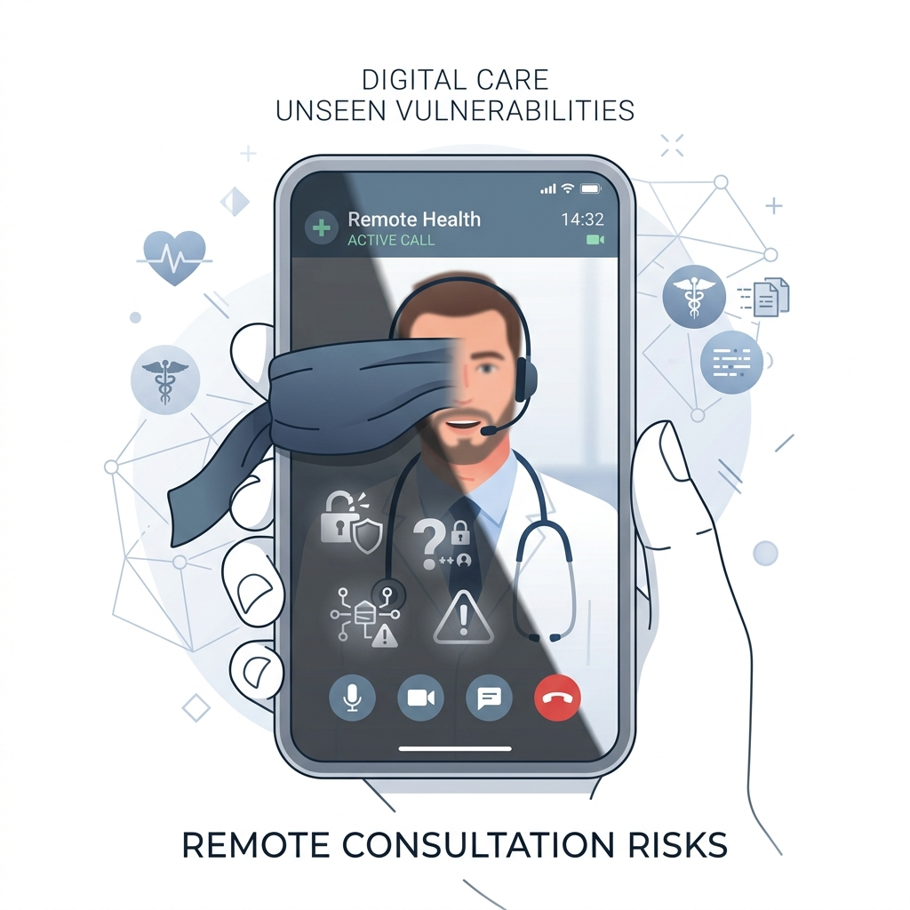

The Pre-2025 Reality
Tap to uncover the historical gaps in chaperoning practice.
1 Reactive, not proactive
A chaperone was made available on request but rarely offered proactively. Patients who did not know to ask often proceeded without one.
2 Missing at booking

There was no expectation to raise the possibility at the time of booking. The offer, if it came at all, arrived moments before the examination.
3 Informal relatives

In many settings, a parent, partner or friend accompanied the patient and was treated informally as fulfilling the chaperone function, without training or impartiality.
4 Digital blindspots

Chaperoning policy applied only to face-to-face examinations. Video and online consultations had no formal chaperone framework, even where digital images were required.
5 Poor documentation
Recording practices varied widely. Many clinicians noted presence but did not record the offer, patient decision or chaperone identity systematically.
Where the Gaps Created Risk
Tap to flip the cards and examine the specific risks.
Patient risk
Tap to reveal
Patient risk
Patients unaware of their right could not exercise it. Vulnerable groups, including children and those with communication needs, were particularly exposed.
Clinician risk
Tap to reveal
Clinician risk
Without a documented independent witness, clinicians had no protection against unfounded allegations. Incomplete records left practices unable to demonstrate safe practice to the CQC.
Safeguarding gap
Tap to reveal
Safeguarding gap
Use of family members as informal chaperones, particularly for children, meant no independent safeguarding presence during intimate examinations.
Policy gap
Tap to reveal
Policy gap
Remote consultations were entirely outside most chaperone policies, at a time when digital-image-based clinical decisions were increasingly common.
Catalysts for Change
Why national guidance became necessary.
The NHS Sexual Safety Charter
Chaperoning is now a direct delivery mechanism of the Charter, which commits every NHS organisation to zero tolerance of sexual misconduct.
CQC Inspection Evidence
Inspectors found significant variation in how practices offered, recorded and evidenced chaperoning.
Patient Safety Incidents
A pattern of incidents in which the absence of an independent chaperone reduced the ability to investigate or substantiate patient concerns.